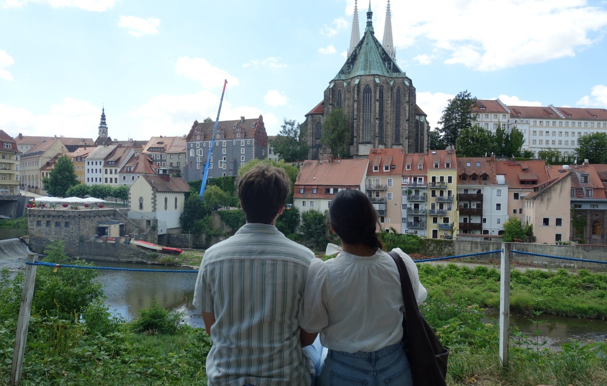
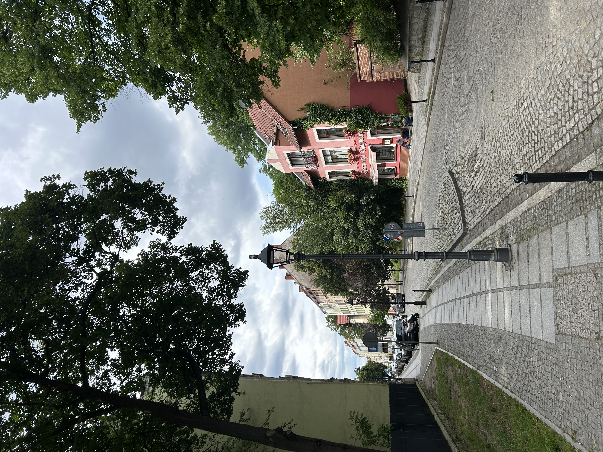

Zgorzelec is the Polish counterpart to the town of Gorlitz, Germany.
My wife and I visited this town on the last day of the trip, crossing the bridge from Germany to Poland and enjoying fried fish and sauerkraut at a small "food park" overlooking the river.
